농산물품질관리사-1차 (2020-04-18 기출문제)
1과목: 관계 법령
1. 농수산물 품질관리법령상 이력추적관리 농산물의 표시에 관한 내용으로 옳지 않은 것은?
- 글자는 고딕체로 한다.
- 산지는 시ㆍ군ㆍ구 단위까지 적는다.
- 쌀만 생산연도를 표시한다.
- 소포장의 경우 표시항목만을 표시할 수 있다.
(정답률: 63%)

2. 농수산물 품질관리법령상 표준규격품의 포장 겉면에 표시하여야 하는 사항 중 국립농산물품질관리원장이 고시하여 생략할 수 있는 것은?
- 품목
- 산지
- 품종
- 등급
(정답률: 63%)
3. 농수산물 품질관리법령상 등록된 지리적표시의 무효심판 청구사유에 해당하지않는 것은?
- 먼저 등록된 타인의 지리적표시와 비슷한 경우
- 상표법 에 따라 먼저 등록된 타인의 상표와 같은 경우
- 지리적표시 등록이 된 후에 그 지리적표시가 원산지 국가에서 보호가 중단된 경우
- 지리적표시 등록 단체의 소속 단체원이 지리적표시를 잘못 사용하여 수요자가 상품의 품질에 대하여 오인한 경우
(정답률: 76%)
4. 농수산물 품질관리법령상 검사대상 농산물 중 생산자단체 등이 정부를 대행하여 수매하는 농산물에 해당하지 않는 것을 모두 고른 것은?
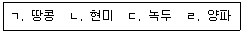
- ㄱ, ㄴ
- ㄱ, ㄷ
- ㄴ, ㄷ
- ㄴ, ㄹ
(정답률: 70%)
5. 농수산물 품질관리법령상 유전자변형농산물 표시의 조사에 관한 설명으로 옳은 것은?
- 농림축산식품부장관은 표시위반 여부의 확인을 위해 관계 공무원에게 매년 1회 이상 유전자변형표시 대상 농산물을 조사하게 하여야 한다.
- 우수관리인증기관, 우수관리시설을 운영하는 자 및 우수관리인증을 받은 자는 정당한 사유 없이 조사를 거부하거나 기피해서는 아니 된다.
- 조사 공무원은 조사대상자가 요구하는 경우에 한하여 그 권한을 표시하는 증표를 보여주어야 한다.
- 조사 공무원은 조사대상자가 요구하는 경우에 한하여 성명ㆍ출입시간ㆍ출입목적 등이 표시된 문서를 내주어야 한다.
(정답률: 66%)
6. 농수산물 품질관리법령상 농산물품질관리사가 수행하는 직무로 옳지 않은 것은?
- 농산물의 규격출하 지도
- 농산물의 생산 및 수확 후 품질관리기술 지도
- 농산물의 선별 및 포장 시설 등의 운용ㆍ관리
- 유전자변형표시 대상 농산물의 검사 및 조사
(정답률: 83%)
7. 농수산물 품질관리법상 안전성검사기관에 대한 지정을 취소해야 하는 사유를 모두 고른 것은? (단, 감경 사유는 고려하지 않음)
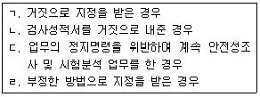
- ㄱ, ㄴ, ㄷ
- ㄱ, ㄴ, ㄹ
- ㄱ, ㄷ, ㄹ
- ㄴ, ㄷ, ㄹ
(정답률: 56%)
8. 농수산물 품질관리법상 농산물의 권장품질표시에 관한 설명으로 옳지 않은 것은?
- 농산물 생산자는 권장품질표시를 할 수 있지만 유통ㆍ판매자는 표시할 수 없다.
- 농림축산식품부장관은 권장품질표시를 장려하기 위하여 이에 필요한 지원을 할 수 있다.
- 권장품질표시는 상품성을 높이고 공정한 거래를 실현하기 위함이다.
- 농림축산식품부장관은 권장품질표시를 한 농산물이 권장품질표시 기준에 적합하지 아니한 경우 그 시정을 권고할 수 있다.
(정답률: 81%)
9. 농수산물 품질관리법령상 생산자단체의 농산물우수관리인증에 관한 내용으로 옳지 않은 것은?
- 생산자단체는 신청서에 사업운영계획서를 첨부하여야 한다.
- 우수관리인증기관은 제출받은 서류를 심사한 후에 현지심사를 하여야 한다.
- 우수관리인증기관은 원칙적으로 전체 구성원에 대하여 각각 심사를 하여야 한다.
- 거짓으로 우수관리인증을 받아 우수관리인증이 취소된 후 1년이 지난 생산자단체는 우수관리인증을 신청할 수 있다.
(정답률: 58%)
10. 농수산물 품질관리법령상 농산물우수관리인증의 유효기간 연장기간에 관한 설명이다. ( )에 들어갈 내용은? (단, 인삼류, 약용작물은 제외함)
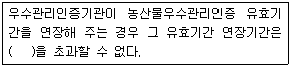
- 1년
- 2년
- 3년
- 4년
(정답률: 57%)
11. 농수산물 품질관리법상 3년 이하의 징역 또는 3천만원 이하의 벌금에 처해지는 위반행위를 한 자는?
- 농산물의 검사증명서 및 검정증명서를 변조한 자
- 검사 대상 농산물에 대하여 검사를 받지 아니한 자
- 다른 사람에게 농산물품질관리사의 명의를 사용하게 한 자
- 재검사 대상 농산물의 재검사를 받지 아니하고 해당 농산물을 판매한 자
(정답률: 54%)
12. 농수산물 품질관리법상 안전성조사 결과 생산단계 안전기준을 위반한 농산물에 대한 시ㆍ도지사의 조치방법으로 옳지 않은 것은?
- 몰수
- 폐기
- 출하 연기
- 용도 전환
(정답률: 68%)
13. 농수산물 품질관리법령상 농산물의 지리적표시 등록을 결정한 경우 공고하지 않아도 되는 사항은?
- 지리적표시 대상지역의 범위
- 지리적표시 등록 생산제품 출하가격
- 지리적표시 등록 대상품목 및 등록명칭
- 등록자의 자체품질기준 및 품질관리계획서
(정답률: 79%)
14. 농수산물 품질관리법령상 지리적표시품의 사후관리 사항으로 옳지 않은 것은?
- 지리적표시품의 등록유효기간 조사
- 지리적표시품의 소유자의 관계 장부의 열람
- 지리적표시품의 시료를 수거하여 조사하거나 전문시험기관 등에 시험 의뢰
- 지리적표시품의 등록기준에의 적합성 조사
(정답률: 57%)
15. 농수산물의 원산지 표시에 관한 법령상 정당한 사유 없이 원산지 조사를 거부하거나 방해한 경우 과태료 부과금액은? (단, 2차 위반의 경우이며, 감경 사유는 고려하지 않음)
- 50만원
- 100만원
- 200만원
- 300만원
(정답률: 52%)
16. 농수산물의 원산지 표시에 관한 법령상 원산지표시 적정성 여부를 관계 공무원에게 조사하게 하여야 하는 자가 아닌 것은?
- 농림축산식품부장관
- 관세청장
- 식품의약품안전처장
- 시ㆍ도지사
(정답률: 42%)
17. 농수산물 유통 및 가격안정에 관한 법령상 농림업관측에 관한 설명으로 옳지 않은 것은?
- 농림축산식품부장관은 가격의 등락 폭이 큰 주요 농산물에 대하여 농림업관측을 실시하고 그 결과를 공표하여야 한다.
- 농림축산식품부장관은 주요 곡물의 수급안정을 위하여 국제곡물관측을 별도로 실시하고 그 결과를 공표하여야 한다.
- 농림축산식품부장관이 지정한 농업관측 전담기관은 한국농수산식품유통공사이다.
- 농림축산식품부장관은 품목을 지정하여 농업협동조합중앙회로 하여금 농림업관측을 실시하게 할 수 있다.
(정답률: 58%)
18. 농수산물 유통 및 가격안정에 관한 법령상 출하자 신고에 관한 내용으로 옳지 않은 것은?
- 도매시장에 농산물을 출하하려는 자는 농림축산식품부령으로 정하는 바에 따라 해당 도매시장의 개설자에게 신고하여야 한다.
- 도매시장법인은 출하자 신고를 한 출하자가 출하 예약을 하고 농산물을 출하하는 경우 경매의 우선 실시 등 우대조치를 할 수 있다.
- 도매시장 개설자는 전자적 방법으로 출하자 신고서를 접수할 수 있다.
- 법인인 출하자는 출하자 신고서를 도매시장법인에게 제출하여야 한다.
(정답률: 59%)
19. 농수산물 유통 및 가격안정에 관한 법령상 출하자에 대한 대금결제에 관한 설명으로 옳지 않은 것은? (단, 특약은 고려하지 않음)
- 도매시장법인은 출하자로부터 위탁받은 농산물이 매매되었을 경우 그 대금의 전부를 출하자에게 즉시 결제하여야 한다.
- 시장도매인은 표준정산서를 출하자와 정산 조직에 각각 발급하고, 정산 조직에 대금 결제를 의뢰하여 정산 조직에서 출하자에게 대금을 지급하는 방법으로 하여야 한다.
- 도매시장 개설자가 업무규정으로 정하는 출하대금결제용 보증금을 납부하고 운전자금을 확보한 도매시장법인은 출하자에게 출하대금을 직접 결제할 수 있다.
- 출하대금결제에 따른 표준송품장, 대금결제의 방법 및 절차 등에 관하여 필요한 사항은 도매시장 개설자가 정한다.
(정답률: 67%)
20. 농수산물 유통 및 가격안정에 관한 법령상 중도매인에 대한 1차 행정처분기준이 허가취소 사유에 해당하는 것은?
- 업무정지 처분을 받고 그 업무정지 기간 중에 업무를 한 경우
- 다른 사람에게 자기의 성명이나 상호를 사용하여 중도매업을 하게 하거나 그 허가증을 빌려준 경우
- 다른 사람에게 시설을 재임대 하는 등 중대한 시설물의 사용기준을 위반한 경우
- 다른 중도매인 또는 매매참가인의 거래참가를 방해한 주동자의 경우
(정답률: 61%)
21. 농수산물 유통 및 가격안정에 관한 법령상 중앙도매시장에 관한 설명으로 옳지 않은 것은?
- 중앙도매시장이란 특별시ㆍ광역시ㆍ특별자치시 또는 특별자치도가 개설한 농수산물도매시장 중 해당 관할구역 및 그 인접지역에서 도매의 중심이 되는 농수산물도매시장으로서 농림축산식품부령 또는 해양수산부령으로 정하는 것을 말한다.
- 개설자는 청과부류와 축산부류에 대하여는 도매시장법인을 두어야 한다.
- 개설자가 업무규정을 변경하는 때에는 농림축산식품부장관 또는 해양수산부장관의 승인을 받아야 한다.
- 개설자가 도매시장법인을 지정하는 경우 농림축산식품부장관 또는 해양수산부장관과 협의하여 지정한다.
(정답률: 64%)
22. 농수산물 유통 및 가격안정에 관한 법령상 농수산물도매시장의 거래품목 중에서 양곡부류에 해당하는 것은?
- 과실류
- 옥수수
- 채소류
- 수삼
(정답률: 88%)
23. 농수산물 유통 및 가격안정에 관한 법령상 농림축산식품부장관이 도매시장, 농수산물공판장 및 민영농수산물도매시장의 통합ㆍ이전 또는 폐쇄를 명령하는 경우 비교ㆍ검토하여야 하는 사항으로 옳지 않은 것은?
- 최근 1년간 유통종사자 수의 증감
- 입지조건
- 시설현황
- 통합ㆍ이전 또는 폐쇄로 인하여 당사자가 입게 될 손실의 정도
(정답률: 66%)
24. 농수산물 유통 및 가격안정에 관한 법령상 농림축산식품부장관이 농산물전자거래 분쟁조정위원회 위원을 해임 또는 해촉할 수 있는 사유를 모두 고른 것은?
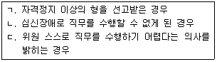
- ㄱ, ㄴ
- ㄱ, ㄷ
- ㄴ, ㄷ
- ㄱ, ㄴ, ㄷ
(정답률: 83%)
25. 농수산물 유통 및 가격안정에 관한 법령상 공판장의 개설에 관한 설명이다. ( )에 들어갈 내용은?
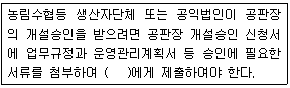
- 농림축산식품부장관
- 농업협동조합중앙회의 장
- 시ㆍ도지사
- 한국농수산식품유통공사의 장
(정답률: 67%)
2과목: 원예작물학
26. 무토양 재배에 관한 설명으로 옳지 않은 것은?
- 작물선택이 제한적이다.
- 주년재배의 제약이 크다.
- 연작재배가 가능하다.
- 초기 투자 자본이 크다.
(정답률: 32%)
27. 조직배양을 통한 무병주 생산이 상업화되지 않은 작물을 모두 고른 것은?
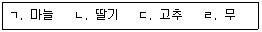
- ㄱ, ㄴ
- ㄱ, ㄷ
- ㄴ, ㄹ
- ㄷ, ㄹ
(정답률: 63%)
28. 다음 ( )에 들어갈 내용은?
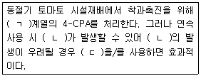
- ㄱ: 시토키닌, ㄴ: 공동과, ㄷ: ABA
- ㄱ: 옥신, ㄴ: 기형과, ㄷ: ABA
- ㄱ: 옥신, ㄴ: 공동과, ㄷ: 지베렐린
- ㄱ: 시토키닌, ㄴ: 기형과, ㄷ: 지베렐린
(정답률: 71%)
29. 다음 ( )에 들어갈 내용은?
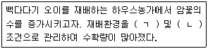
- ㄱ: 고온, ㄴ: 단일
- ㄱ: 저온, ㄴ: 장일
- ㄱ: 저온, ㄴ: 단일
- ㄱ: 고온, ㄴ: 장일
(정답률: 82%)
30. 다음 ( )에 들어갈 내용은?
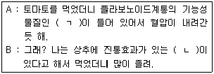
- ㄱ: 루틴(rutin), ㄴ: 락투신(lactucin)
- ㄱ: 라이코펜(lycopene), ㄴ: 락투신
- ㄱ: 루틴, ㄴ: 시니그린(sinigrin)
- ㄱ: 라이코펜, ㄴ: 시니그린
(정답률: 56%)
31. 하우스피복재로서 물방울이 맺히지 않도록 제작된 것은?
- 무적필름
- 산광필름
- 내후성강화필름
- 반사필름
(정답률: 80%)
32. 채소재배에서 실용화된 천적이 아닌 것은?
- 무당벌레
- 칠레이리응애
- 마일스응애
- 점박이응애
(정답률: 64%)
33. 다음 ( )에 들어갈 내용은?
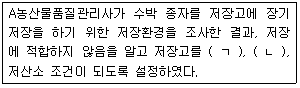
- ㄱ: 저온, ㄴ: 저습
- ㄱ: 고온, ㄴ: 저습
- ㄱ: 저온, ㄴ: 고습
- ㄱ: 고온, ㄴ: 고습
(정답률: 82%)
34. 에틸렌의 생리작용이 아닌 것은?
- 꽃의 노화 촉진
- 줄기신장 촉진
- 꽃잎말림 촉진
- 잎의 황화 촉진
(정답률: 69%)
35. 원예학적 분류를 통해 화훼류를 진열·판매하고 있는 A마트에서, 정원에 심을 튤립을 소비자가 구매하고자 할 경우 가야 할 화훼류의 구획은?
- 구근류
- 일년초
- 다육식물
- 관엽식물
(정답률: 83%)
36. 화훼작물과 주된 영양번식 방법의 연결이 옳지 않은 것은?
- 국화 - 분구
- 수국 - 삽목
- 접란 - 분주
- 개나리 - 취목
(정답률: 78%)
37. A농산물품질관리사가 국화농가를 방문했더니 로제트로 피해를 입고 있어, 이에 대한 조언으로 옳지 않은 것은?
- 가을에 15℃ 이하의 저온을 받으면 일어난다.
- 근군의 생육이 불량하여 일어난다.
- 정식 전에 삽수를 냉장하여 예방한다.
- 동지아에 지베렐린 처리를 하여 예방한다.
(정답률: 41%)
38. 가로등이 밤에 켜져 있어 주변 화훼작물의 개화가 늦어졌다. 이에 해당하지 않는 작물은?
- 국화
- 장미
- 칼랑코에
- 포인세티아
(정답률: 80%)
39. 절화류에서 블라인드 현상의 원인이 아닌 것은?
- 엽수 부족
- 높은 C/N율
- 일조량 부족
- 낮은 야간온도
(정답률: 79%)
40. 장미 재배 시 벤치를 높이고 줄기를 휘거나 꺾어 재배하는 방법은?
- 매트재배
- 암면재배
- 아칭재배
- 사경재배
(정답률: 86%)
41. 다음 ( )에 들어갈 과실은?
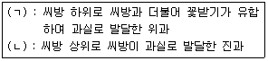
- ㄱ: 사과, ㄴ: 배
- ㄱ: 사과, ㄴ: 복숭아
- ㄱ: 복숭아, ㄴ: 포도
- ㄱ: 배, ㄴ: 포도
(정답률: 64%)
42. 국내 육성 과수 품종이 아닌 것은?
- 황금배
- 홍로
- 거봉
- 유명
(정답률: 82%)
43. 과수의 일소 현상에 관한 설명으로 옳지 않은 것은?
- 강한 햇빛에 의한 데임 현상이다.
- 토양 수분이 부족하면 발생이 많다.
- 남서향의 과원에서 발생이 많다.
- 모래토양보다 점질토양 과원에서 발생이 많다.
(정답률: 94%)
44. 다음이 설명하는 것은?
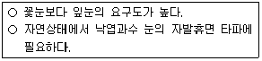
- 질소 요구도
- 이산화탄소 요구도
- 고온 요구도
- 저온 요구도
(정답률: 70%)
45. 자웅이주(암수 딴그루)인 과수는?
- 밤
- 호두
- 참다래
- 블루베리
(정답률: 72%)
46. 상업적 재배를 위해 수분수가 필요 없는 과수 품종은?
- 신고배
- 후지사과
- 캠벨얼리포도
- 미백도복숭아
(정답률: 64%)
47. 다음이 설명하는 생리장해는?
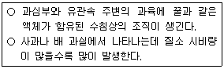
- 고두병
- 축과병
- 밀증상
- 바람들이
(정답률: 77%)
48. 곰팡이에 의한 병이 아닌 것은?
- 감귤 역병
- 사과 화상병
- 포도 노균병
- 복숭아 탄저병
(정답률: 80%)
49. 다음의 효과를 볼 수 있는 비료는?
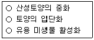
- 요소
- 황산암모늄
- 염화칼륨
- 소석회
(정답률: 75%)
50. 과수의 병해충 종합 관리체계는?
- IFP
- INM
- IPM
- IAA
(정답률: 75%)
3과목: 수확 후 품질관리론
51. 적색 방울토마토 과실에서 숙성과정 중 일어나는 현상이 아닌 것은?
- 세포벽 분해
- 정단조직 분열
- 라이코펜 합성
- 환원당 축적
(정답률: 55%)
52. 사과 세포막에 있는 에틸렌 수용체와 결합하여 에틸렌 발생을 억제하는 물질은?
- 1-MCP
- 과망간산칼륨
- 활성탄
- AVG
(정답률: 70%)
53. 원예산물의 호흡에 관한 설명으로 옳지 않은 것은?
- 당과 유기산은 호흡기질로 이용된다.
- 딸기와 포도는 호흡 비급등형에 속한다.
- 산소가 없거나 부족하면 무기호흡이 일어난다.
- 당의 호흡계수는 1.33이고, 유기산의 호흡계수는 1이다.
(정답률: 72%)
54. 원예산물의 종류와 주요 항산화 물질의 연결이 옳지 않은 것은?
- 사과 - 에톡시퀸(ethoxyquin)
- 포도 - 폴리페놀(polyphenol)
- 양파 - 케르세틴(quercetin)
- 마늘 - 알리신(allicin)
(정답률: 66%)
55. 과수작물의 성숙기 판단 지표를 모두 고른 것은?
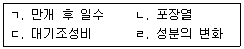
- ㄱ, ㄴ
- ㄱ, ㄹ
- ㄴ, ㄷ
- ㄷ, ㄹ
(정답률: 80%)
56. 이산화탄소 1 % 는 몇 ppm인가?
- 10
- 100
- 1,000
- 10,000
(정답률: 78%)
57. 상온에서 호흡열이 가장 높은 원예산물은?
- 사과
- 마늘
- 시금치
- 당근
(정답률: 81%)
58. 포도와 딸기의 주요 유기산을 순서대로 옳게 나열한 것은?
- 구연산, 주석산
- 옥살산, 사과산
- 주석산, 구연산
- 사과산, 옥살산
(정답률: 67%)
59. 사과 저장 중 과피에 위조현상이 나타나는 주된 원인은?
- 저농도 산소
- 과도한 증산
- 고농도 이산화탄소
- 고농도 질소
(정답률: 70%)
60. 오존수 세척에 관한 설명으로 옳은 것은?
- 오존은 상온에서 무색, 무취의 기체이다.
- 오존은 강력한 환원력을 가져 살균효과가 있다.
- 오존수는 오존가스를 물에 혼입하여 제조한다.
- 오존은 친환경물질로 작업자에게 위해하지 않다.
(정답률: 48%)
61. 진공식 예냉의 효율성이 떨어지는 원예산물은?
- 사과
- 시금치
- 양상추
- 미나리
(정답률: 78%)
62. 수확후 예건이 필요한 품목을 모두 고른 것은?
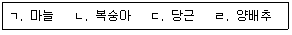
- ㄱ, ㄴ
- ㄱ, ㄹ
- ㄴ, ㄷ
- ㄷ, ㄹ
(정답률: 84%)
63. 신선편이에 관한 설명으로 옳지 않은 것은?
- 절단, 세척, 포장 처리된다.
- 첨가물을 사용할 수 없다.
- 가공전 예냉처리가 권장된다.
- 취급장비는 오염되지 않아야 한다.
(정답률: 86%)
64. 배의 장기저장을 위한 저장고 관리로 옳지 않은 것은?
- 공기통로가 확보되도록 적재한다.
- 배의 품온을 고려하여 관리한다.
- 온도편차를 최소화되게 관리한다.
- 냉각기에서 나오는 송풍 온도는 배의 동결점보다 낮게 유지한다.
(정답률: 94%)
65. 다음의 저장 방법은?
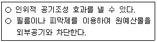
- 저온저장
- CA저장
- MA저장
- 상온저장
(정답률: 75%)
66. 4℃ 저장 시 저온장해가 발생하지 않는 품목은? (단, 온도 조건만 고려함)
- 양파
- 고구마
- 생강
- 애호박
(정답률: 59%)
67. A농산물품질관리사가 아래 품종의 배를 상온에서 동일조건 하에 저장하였다. 상대적으로 저장기간이 가장 짧은 품종은?
- 신고
- 감천
- 장십랑
- 만삼길
(정답률: 47%)
68. 원예산물의 수확후 손실을 줄이기 위한 방법으로 옳지 않은 것은?
- 마늘 장기저장 시 90 % ∼ 95 % 습도로 유지한다.
- 복숭아 유통 시 에틸렌 흡착제를 사용한다.
- 단감은 PE필름으로 밀봉하여 저장한다.
- 고구마는 수확직후 30℃, 85 % 습도로 큐어링한다.
(정답률: 84%)
69. 다음 ( )에 들어갈 내용은?
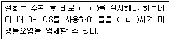
- ㄱ: 물세척, ㄴ: 염기성화
- ㄱ: 물올림, ㄴ: 산성화
- ㄱ: 물세척, ㄴ: 산성화
- ㄱ: 물올림, ㄴ: 염기성화
(정답률: 76%)
70. 원예산물의 원거리운송 시 겉포장재에 관한 설명으로 옳지 않은 것은?
- 방습, 방수성을 갖추어야 한다.
- 원예산물과 반응하여 유해물질이 생기지 않아야 한다.
- 원예산물을 물리적 충격으로부터 보호해야 한다.
- 오염확산을 막기 위해 완벽한 밀폐를 실시한다.
(정답률: 83%)
71. 원예산물에 있어서 PLS(Positive List System)는?
- 식물호르몬 사용품목 관리제도
- 능동적 MA포장 필름목록 관리제도
- 농약 허용물질목록 관리제도
- 식품위해요소 중점 관리제도
(정답률: 70%)
72. 5℃로 냉각된 원예산물이 25℃ 외기에 노출된 직후 나타나는 현상은?
- 동해
- 결로
- 부패
- 숙성
(정답률: 81%)
73. 원예산물의 GAP관리 시 생물학적 위해 요인을 모두 고른 것은?
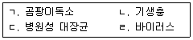
- ㄱ, ㄴ
- ㄴ, ㄷ
- ㄱ, ㄷ, ㄹ
- ㄴ, ㄷ, ㄹ
(정답률: 50%)
74. 원예산물별 저장 중 발생하는 부패를 방지하는 방법으로 옳지 않은 것은?
- 딸기 - 열수세척
- 양파 - 큐어링
- 포도 - 아황산가스 훈증
- 복숭아 - 고농도 이산화탄소 처리
(정답률: 82%)
75. 절화수명 연장을 위해 자당을 사용하는 주된 이유는?
- 미생물 억제
- 에틸렌 작용 억제
- pH 조절
- 영양분 공급
(정답률: 65%)
4과목: 농산물유통론
76. 농산물 유통구조의 특성으로 옳지 않은 것은?
- 계절적 편재성 존재
- 표준화·등급화 제약
- 탄력적인 수요와 공급
- 가치대비 큰 부피와 중량
(정답률: 70%)
77. 농산업에 관한 설명으로 옳은 것을 모두 고른 것은?
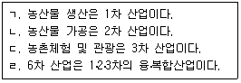
- ㄱ, ㄴ
- ㄷ, ㄹ
- ㄱ, ㄴ, ㄷ
- ㄱ, ㄴ, ㄷ, ㄹ
(정답률: 81%)
78. A농업인은 배추 산지수집상 B에게 1,000포기를 100만원에 판매하였다. B는 유통과정 중 20 %가 부패하여 폐기하고 800포기를 포기당 2,500원씩 200만원에 판매 하였다. B의 유통마진율(%)은?
- 40
- 50
- 60
- 65
(정답률: 67%)
79. 농업협동조합의 역할로 옳지 않은 것은?
- 거래교섭력 강화
- 규모의 경제 실현
- 대형유통업체 견제
- 농가별 개별출하 유도
(정답률: 69%)
80. 공동계산제의 장점으로 옳지 않은 것은?
- 체계적 품질관리
- 농가의 위험분산
- 대량거래의 유리성
- 농가의 차별성 확대
(정답률: 70%)
81. 유닛로드시스템(Unit Load System)에 관한 설명으로 옳지 않은 것은?
- 규격품 출하를 유도한다.
- 초기 투자비용이 많이 소요된다.
- 하역과 수송의 다양화를 가져온다.
- 일정한 중량과 부피로 단위화할 수 있다.
(정답률: 75%)
82. 농산물 소매상에 관한 내용으로 옳은 것은?
- 중개기능 담당
- 소비자 정보제공
- 생산물 수급조절
- 유통경로상 중간단계
(정답률: 63%)
83. 유통마진에 관한 설명으로 옳지 않은 것은?
- 수집, 도매, 소매단계로 구분된다.
- 유통경로가 길수록 유통마진은 낮다.
- 유통마진이 클수록 농가수취가격이 낮다.
- 소비자 지불가격에서 농가수취가격을 뺀 것이다.
(정답률: 61%)
84. 농산물 종합유통센터에 관한 내용으로 옳은 것은?
- 소포장, 가공기능 수행
- 출하물량 사후발주 원칙
- 전자식 경매를 통한 도매거래
- 수지식 경매를 통한 소매거래
(정답률: 56%)
85. 경매에 참여하는 가공업체, 대형유통업체 등의 대량수요자에 해당되는 유통주체는?
- 직판상
- 중도매인
- 매매참가인
- 도매시장법인
(정답률: 52%)
86. 농산물 산지유통의 기능으로 옳은 것을 모두 고른 것은?
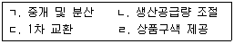
- ㄱ, ㄴ
- ㄴ, ㄷ
- ㄱ, ㄷ, ㄹ
- ㄱ, ㄴ, ㄷ, ㄹ
(정답률: 60%)
87. 농산물 포전거래가 발생하는 이유로 옳지 않은 것은?
- 농가의 위험선호적 성향
- 개별농가의 가격예측 어려움
- 노동력 부족으로 적기수확의 어려움
- 영농자금 마련과 거래의 편의성 증대
(정답률: 62%)
88. 농산물 수송비를 결정하는 요인으로 옳은 것을 모두 고른 것은?
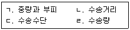
- ㄱ, ㄴ
- ㄱ, ㄷ, ㄹ
- ㄴ, ㄷ, ㄹ
- ㄱ, ㄴ, ㄷ, ㄹ
(정답률: 77%)
89. 농산물의 제도권 유통금융에 해당되는 것은?
- 선대자금
- 밭떼기자금
- 도·소매상의 사채
- 저온창고시설자금 융자
(정답률: 61%)
90. 농산물 유통에서 위험부담기능에 관한 설명으로 옳지 않은 것은?
- 가격변동은 경제적 위험에 해당된다.
- 소비자 선호의 변화는 경제적 위험에 해당된다.
- 수송 중 발생하는 파손은 물리적 위험에 해당된다.
- 간접유통경로상의 모든 피해는 생산자가 부담한다.
(정답률: 71%)
91. 농산물 소매유통에 관한 설명으로 옳은 것은?
- 비대면거래가 불가하다.
- 카테고리 킬러는 소매유통업태에 해당된다.
- 수집기능을 주로 담당한다.
- 전통시장은 소매유통업태로 볼 수 없다.
(정답률: 60%)
92. 정부의 농산물 수급안정정책으로 옳은 것을 모두 고른 것은?
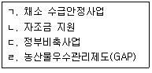
- ㄱ, ㄴ
- ㄱ, ㄹ
- ㄱ, ㄴ, ㄷ
- ㄴ, ㄷ, ㄹ
(정답률: 66%)
93. 배추 가격의 상승에 따른 무의 수요량 변화를 나타내는 것은?
- 수요의 교차탄력성
- 수요의 가격변동률
- 수요의 가격탄력성
- 수요의 소득탄력성
(정답률: 67%)
94. 채소류 가격이 10 % 인상되었을 경우 매출액의 변화를 조사하는 방법으로 옳은 것은?
- 사례조사
- 델파이법
- 심층면접법
- 인과관계조사
(정답률: 55%)
95. 농산물에 대한 소비자의 구매 후 행동이 아닌 것은?
- 대안평가
- 반복구매
- 부정적 구전
- 경쟁농산물 구매
(정답률: 71%)
96. 시장세분화의 장점으로 옳지 않은 것은?
- 무차별적 마케팅
- 틈새시장 포착
- 효율적 자원배분
- 라이프스타일 반영
(정답률: 72%)
97. 농산물 브랜드에 관한 설명으로 옳지 않은 것은?
- 차별화를 통한 브랜드 충성도를 형성한다.
- 규모화·조직화로 브랜드 효과가 높아진다.
- 내셔널 브랜드(NB)는 유통업자 브랜드이다.
- 브랜드명, 등록상표, 트레이드마크 등이 해당된다.
(정답률: 70%)
98. 유통비용 중 직접비용에 해당되는 항목의 총 금액은?
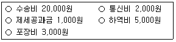
- 27,000원
- 28,000원
- 30,000원
- 31,000원
(정답률: 71%)
99. 농산물의 가격을 높게 설정하여 상품의 차별화와 고품질의 이미지를 유도하는 가격전략은?
- 명성가격전략
- 탄력가격전략
- 침투가격전략
- 단수가격전략
(정답률: 75%)
100. 경품 및 할인쿠폰 등을 통한 촉진활동의 효과로 옳지 않은 것은?
- 상품정보 전달
- 장기적 상품홍보
- 상품에 대한 기억상기
- 가시적, 단기적 성과창출
(정답률: 71%)